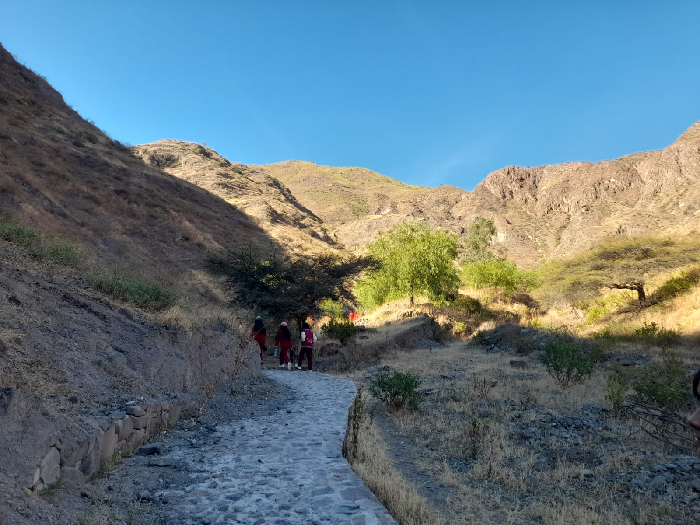
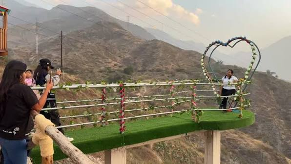

Lugares Destacados

Chucuncuya
Importante sitio arqueológico del distrito.

Mirador Del Cerrito de la pascua
Vista panorámica de los paisajes de Huarochirí.

Iglesia Colonial
Patrimonio histórico y cultural de San Bartolomé.